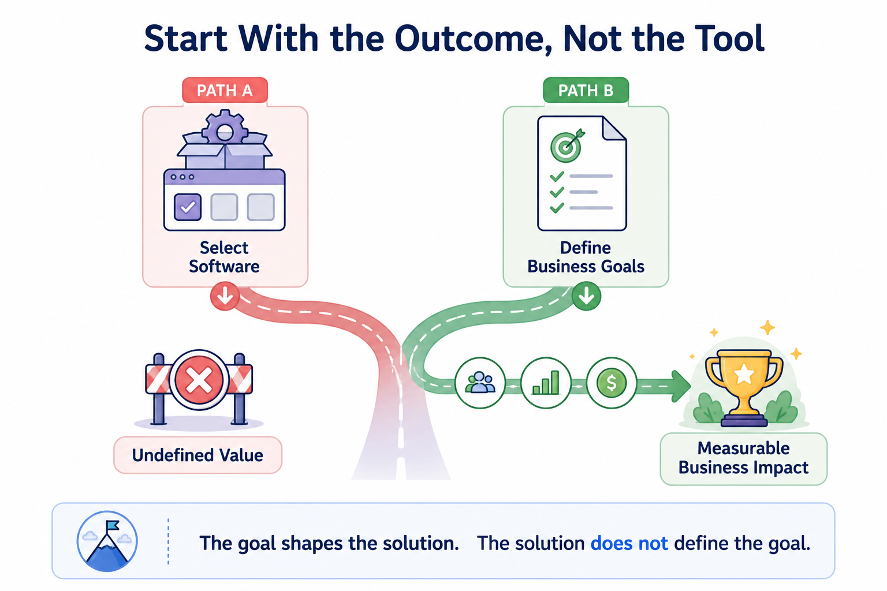
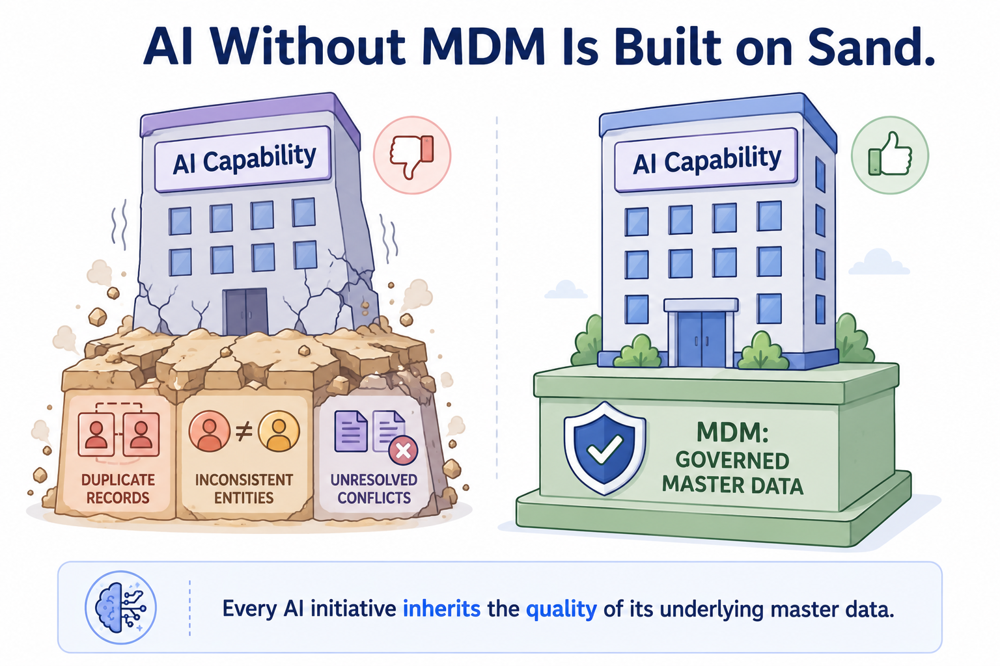
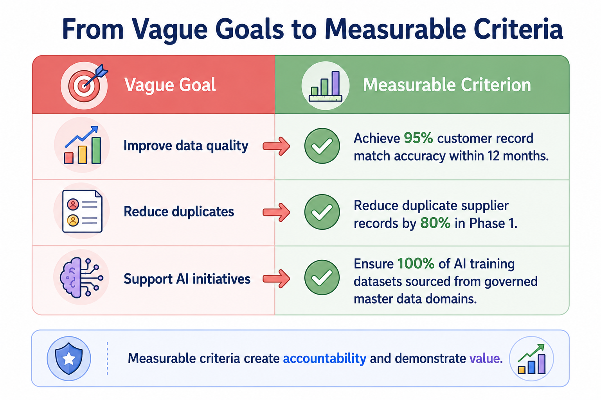
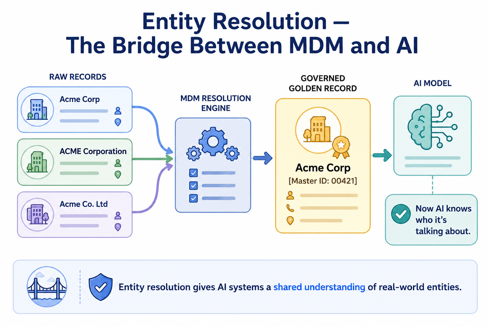
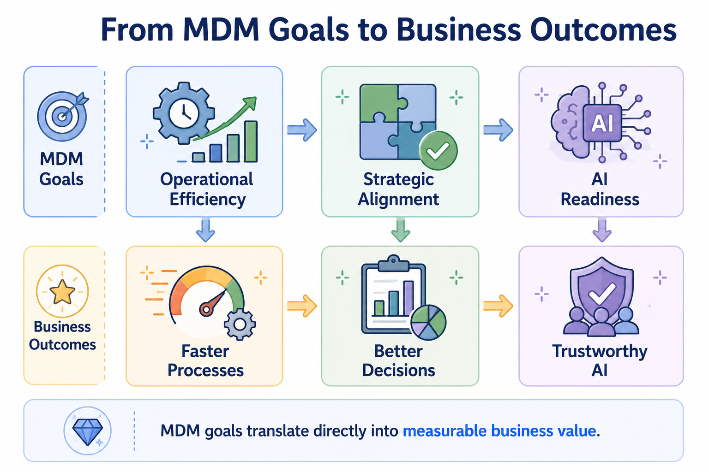

MDM Goals and Success Criteria
Module support notes
Why Goals Come Before Technology
Most MDM initiatives don't fail because of bad technology — they fail because no one defined what success was supposed to look like. When organizations start with software selection, they optimize for features. When they start with business goals, they optimize for outcomes.
This section focuses on the goal-setting discipline that separates MDM programs delivering lasting value from those that stall after go-live.

The AI Readiness Imperative
AI readiness has become one of the most compelling business cases for MDM investment. As organizations adopt machine learning, generative AI, and intelligent automation, data quality issues they tolerated for years become acute liabilities — because AI amplifies them at scale.
A customer service AI referencing three conflicting records for the same customer will generate inconsistent responses. A demand forecasting model trained on duplicate product records will produce inaccurate predictions. MDM addresses these problems at the source, before they propagate through AI systems and into business decisions.
Warning
AI doesn't fix dirty data — it scales it. Organizations that deploy AI on top of unresolved master data problems don't eliminate those problems; they multiply them across every AI-generated output, recommendation, and decision.

What Good Success Criteria Look Like
Effective success criteria share three qualities: they are specific, time-bound, and tied to a business outcome rather than a technical activity. "Improve data quality" is not a success criterion. "Achieve a 95% match rate on customer records within the first 12 months of implementation" is.
When organizations define success this way, MDM becomes something the business can evaluate, fund, and champion — not just something IT delivers.
- Specific — names a domain, metric, and target threshold
- Time-bound — sets a clear delivery window
- Outcome-linked — connects to a business result, not just a technical activity
Tip
When drafting success criteria, test each one against this question: "Would a business stakeholder outside of IT recognize this as valuable?" If the answer is no, keep refining. The clearest success criteria are ones that a CFO, CMO, or COO would immediately understand and care about.

A Note on AI Entity Resolution
Entity resolution — identifying when multiple records refer to the same real-world entity — is one of the most important capabilities MDM provides for AI. When an AI system processes customer interactions, product queries, or supplier transactions, it needs to know that "Acme Corp," "ACME Corporation," and "Acme Co. Ltd" are all the same organization.
MDM creates the golden record that gives AI systems that shared reference point. Without it, AI treats each variation as a separate entity — multiplying errors across every interaction.
Note
AI-powered entity resolution — where machine learning models identify probable matches across records — is increasingly a core feature of modern MDM platforms. Setting AI readiness as an explicit MDM goal positions organizations to take full advantage of these capabilities as they mature.

MDM goals don't exist in isolation — each one maps directly to a business outcome that stakeholders can see and measure.
